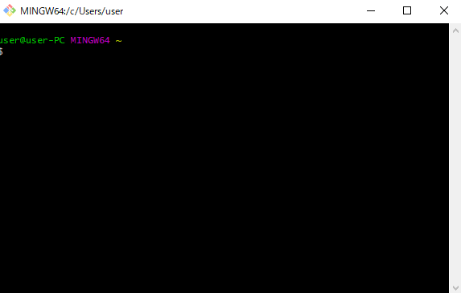
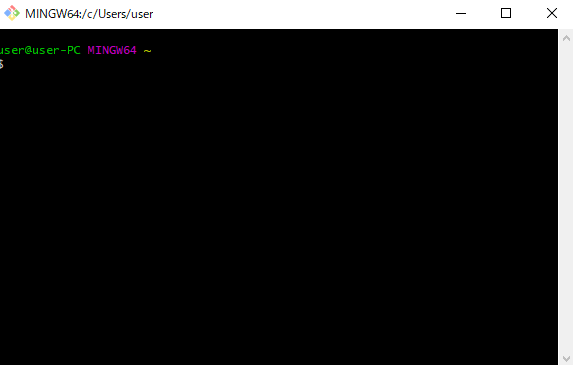

リモートとローカルの間でファイルやディレクトリをコピーする | scpコマンドによるアップロード、またはダウンロード
ターミナルは Git for windowsに付属するGit Bash リモート先はさくらサーバーのスタンダードプランで検証。 
リモートからローカルへファイルをコピーする(ファイルをサーバーからダウンロード)
$ scp 【ユーザー名】@【ユーザー名】.sakura.ne.jp:www/animal/neko.txt ~/Documents/neko.txt Enter password: 【パスワード】ローカルの「~/Documents」パスが示す場所は「C:\Users\user\Documents」である。
Git for windowsのホーム（ルート）は「C:\Users\user」になっているためである。
「$」になっている状態でscpコマンドを実行すること。 最初にsshコマンドでさくらサーバーと接続する必要ない。
秘密キー、公開キーの設定が済んでいない場合はscpコマンドの実行後、パスワードの入力が求められる。 パスワードはさくらサーバー（スタンダードプラン）であるならFTP接続する際のパスワードと同じである。
ローカル側のパスはファイル名を省略してもよい
$ scp 【ユーザー名】@【ユーザー名】.sakura.ne.jp:www/animal/neko.txt ~/Documents/
ローカル側パスのファイル名を変更すると、コピー先のファイル名も変更される。
$ scp 【ユーザー名】@【ユーザー名】.sakura.ne.jp:www/animal/neko.txt ~/Documents/aka_neko.txt
ローカルからリモートへファイルをコピーする(ファイルをサーバーへアップロード)
$ scp ~/Documents/neko.txt 【ユーザー名】@【ユーザー名】.sakura.ne.jp:www/animal/neko.txt Enter password: 【パスワード】単純にローカルパスとリモートパスを入れ替えるだけである。
当然ながら、こちらもパスワードの入力が求められる。
リモートパスのファイル名部分は省略してもよい。
$ scp ~/Documents/neko.txt 【ユーザー名】@【ユーザー名】.sakura.ne.jp:www/animal
リモートからローカルへディレクトリをコピーする(ディレクトリをサーバーからダウンロード)
$ scp -r 【ユーザー名】@【ユーザー名】.sakura.ne.jp:www/animal/test_dir ~/Documents/test_dir Enter password: 【パスワード】「-r」オプションを指定するとディレクトリをコピーする。 もちろん階層化のファイル群も一緒にコピーする。 上記と同様、コピー先のディレクトリ名部分は省略できる。
$ scp -r 【ユーザー名】@【ユーザー名】.sakura.ne.jp:www/animal/test_dir ~/Documents/
ローカルからリモートへディレクトリをコピーする(ディレクトリをサーバーへアップロード)
$ scp -r ~/Documents/test_dir 【ユーザー名】@【ユーザー名】.sakura.ne.jp:www/animal/test_dir Enter password: 【パスワード】ローカルパスとリモートパスを入れ替えるだけ。 もちろんコピー先のディレクトリ名部分は省略可能。
ホスト認証：公開鍵と秘密鍵
参考→Gitの覚書：SSH Keyの作成とGitHubへ登録 | 公開鍵と秘密鍵参考→Eclipseによる公開キーと秘密キーの手順
SSHにログインする時、ホスト認証とユーザ認証を行う。 ユーザー認証はユーザー名とパスワードで行うログインのこと。 ホスト認証は接続先ホストがなりすましでない正しいものであるかを確認する処理である。
ホスト認証は公開鍵と秘密鍵からなる暗号化技術が使われている。 暗号の種類にはいくつか存在するが、2017年時点では RSAが主流である。
公開鍵と秘密鍵の作成手順（自分のPCからさくらサーバーに接続する場合）
-
自分のPCにてターミナルを開き、下記のコマンドを実行する。
$ ssh-keygen -t rsa
-
いくつか質問を聞かれるので適当な値を入力してEnter。（未入力のままEnterしてもよい）
$ ssh-keygen -t rsa Generating public/private rsa key pair. Enter file in which to save the key (/c/Users/user/.ssh/id_rsa): Enter passphrase (empty for no passphrase): Enter same passphrase again: Your identification has been saved in /c/Users/user/.ssh/id_rsa. Your public key has been saved in /c/Users/user/.ssh/id_rsa.pub. The key fingerprint is: SHA256:c5pFZLih+CUhsIdUd2DsMg4ObPTYiNV+7T02moHcmIY user@user-PC The key's randomart image is: +---[RSA 2048]----+ | o+..+...o | | o.oooo.oo | |+.B..+ + o. | |o=.+= = +. | |.o o B OS.o | | . E X +*= | | . o= o | | o | | | +----[SHA256]-----+
- 自PCのカレントディレクトリに「.ssh」ディレクトリが作成される。 .sshディレクトリの中にはid_rsaファイルととid_rsa.pubファイルが作成されている。 id_rsaファイルは秘密鍵であり、id_rsa.pubは公開鍵である。 秘密鍵であるid_rsaファイルは教えてはいけない。自PCだけで管理するように。
-
自PC環境からさくらサーバーに公開鍵ファイル（id_rsa.pub）を転送する。
$ scp .ssh/id_rsa.pub ユーザー@ユーザー.sakura.ne.jp:/home/ユーザー/.ssh/id_rsa.pub
-
authorized_keysファイルにid_rsa.pubの内容を統合する。
はじめて
はじめてid_rsa.pubをアップする場合、id_rsa.pubの名前をauthorized_keysにファイル名変更する。-
sshコマンドでさくらサーバーにログインする。
ssh -l ユーザー ユーザー.sakura.ne.jp
-
.sshディレクトリに移動。
% cd .ssh
-
先ほどアップしたid_rsa.pubファイルの名前をauthorized_keysに変更する。
mv id_rsa.pub authorized_keys
2回目以降
2回目のid_rsa.pubのアップ、つまり別PCのid_rsa.pubを追加する場合。- 別PCでid_rsa.pubを作成する。
- FTPでもよいのでサーバー側の.sshディレクトリにid_rsa.pubを配置する。
-
sshコマンドでさくらサーバーにログインする。
ssh -l ユーザー ユーザー.sakura.ne.jp
-
.sshディレクトリに移動。
% cd .ssh
-
catコマンドでid_rsa.pubの内容をauthorized_keysファイルの末尾に追加する。
% cat id_rsa.pub >> authorized_keys
-
内容を統合したら、id_rsa.pubは用済みなので削除する。
% rm id_rsa.pub
-
sshコマンドでさくらサーバーにログインする。
-
一旦ログアウトして、もういちどsshコマンドでログインしてみると、パスワードの入力せずログインできるようになっている。
ssh -l ユーザー ユーザー.sakura.ne.jp
ワンライナー
ワンライナーでSSHキーを追加する。$ cat ~/.ssh/id_rsa.pub | ssh example@example.sakura.ne.jp 'cat >> .ssh/authorized_keys'
公開鍵をアップした後のさくらサーバーの挙動
公開鍵の登録をしたPCからSSHログインするとき、パスワード入力は不要になっている。公開鍵を登録していない別ＰＣからも引き続き、パスワードによる接続ができるようである。
FTPへの影響
上記の検証中にFFFTPでログインができなくなるという問題が発生した。「新規ホスト」から再設定すると再びログインできるようになった。
暗号化の部分で干渉している箇所があるのかもしれないが詳細な原因は不明。